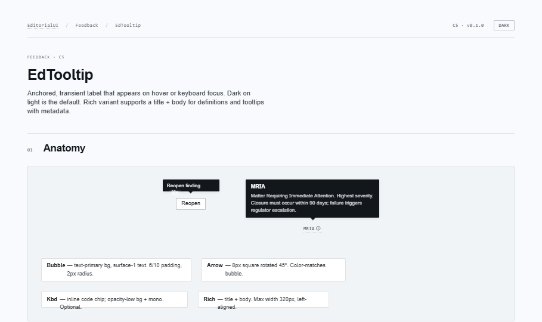
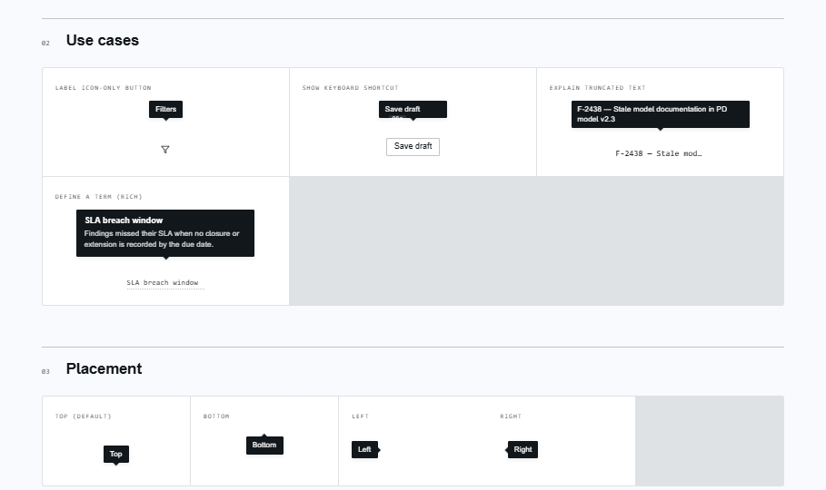
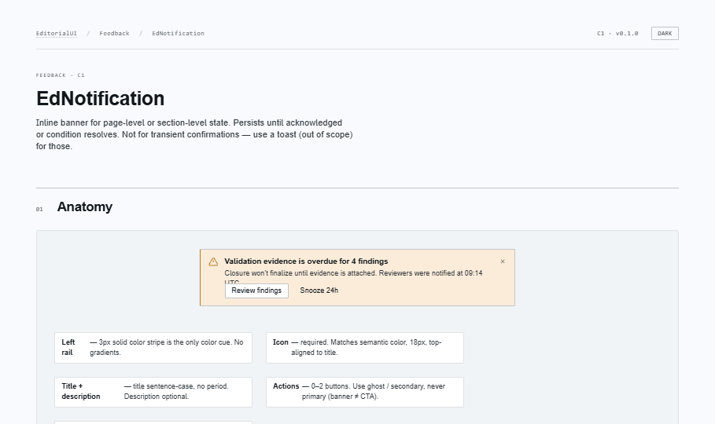
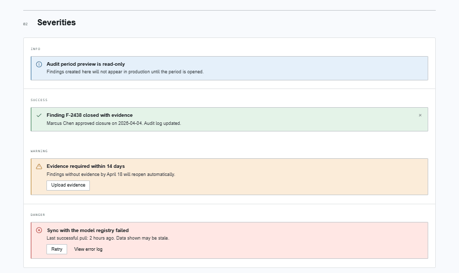
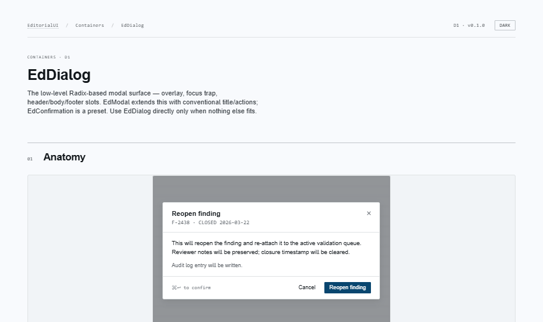
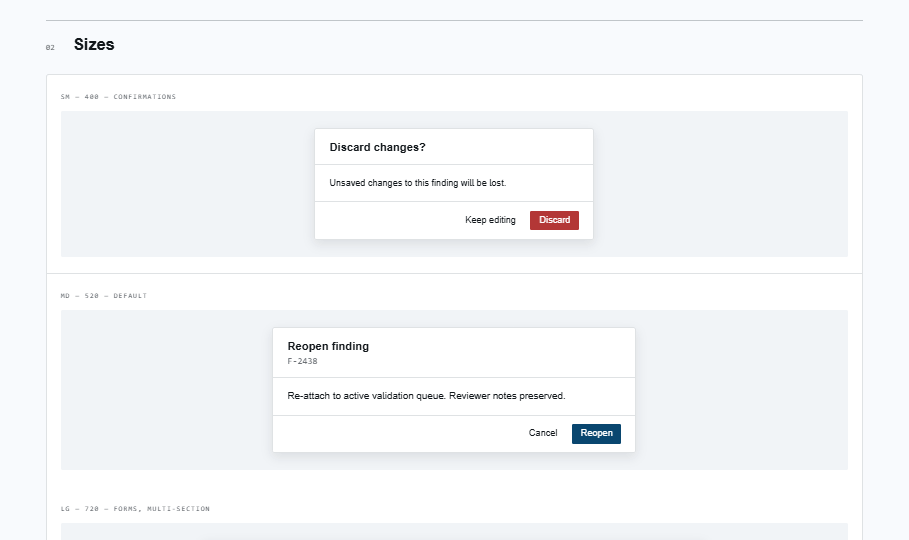
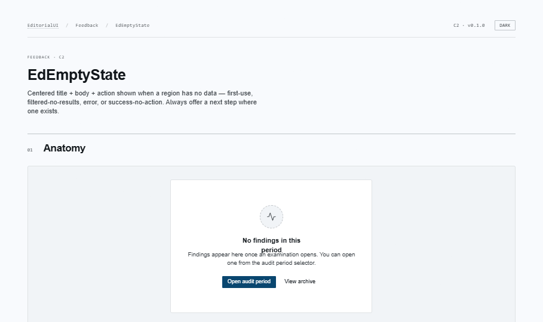
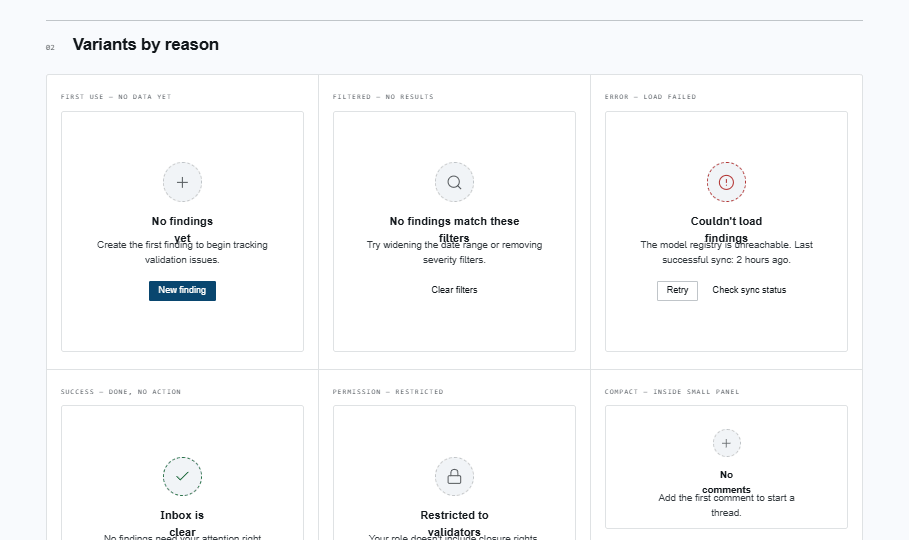

EditorialUI · Implementation
The components that talk back to the user: hover labels, persistent banners, modal surfaces, and empty regions. Two build on Radix (Tooltip, Dialog); two are plain React + CSS.
apostlerisk. Assumes Bundles 1–4 merged; covers the app-root EdTooltipProvider wiring, a jsdom/portal testing note, and the window.confirm → EdConfirmation migration.
open ↗
Anchored, transient label on hover / focus. Simple (with optional kbd chip) or rich (title + body). Dark-on-light, auto-flips, honors reduced-motion. Wrap the app once in EdTooltipProvider for instant grouped hovers. Read-only hints only.


Inline banner for persistent page / section state. Four severities (each with a required icon — never color-only), three variants (rail / subtle / compact). ARIA role derived from severity. Actions are ghost/secondary, never primary. Not a toast; not a replacement for content.


Radix modal surface — overlay, focus trap, header / body / footer. Four sizes, danger styling, preventOutsideClose for unsaved-form guards, scrolling body. EdConfirmation is the preset for the destructive / confirm case — pass renderActions with your EdButtons.


Centered title + body + actions for a region with no data. Tones (neutral / danger / success), restrained single-glyph visual in a dashed ring — no illustrations. compact for small panels, headingLevel matches the document outline. Institutional copy tone.


@radix-ui/react-tooltipEdTooltip@radix-ui/react-dialogEdDialog, EdConfirmation
EdNotification and EdEmptyState are plain React + CSS + lucide icons — no new deps.
EdNotification requires an icon per severity; empty-state tones carry icon + text. No color-only differentiation.EdNotification picks status vs alert from severity. role="none" opts out for load-present banners.EdConfirmation replaces window.confirm — non-blocking, wire onConfirm rather than awaiting a boolean.EdCard, EdModal, EdSidePanel,
EdDisclosure, EdAccordion. EdModal and
EdSidePanel build directly on EdDialog from this
bundle — the modal surface, focus trap, and overlay are already solved here.